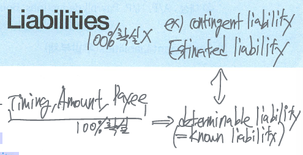

Current Liabilities
Liabilities
past - transaction or event
present - obligation of an entity
future - sacrifice of economic benefit (probable payment of assets or services)

Current liabilities
1년 초과 상환 - long-term liability, non-current liability
expected to be paid using current assets or through the creation of other current liabilities
It will be paid within one year or the operating cycle, whichever is longer.
Current liabilities are valued at their settlement value.
types - account payable, short-term notes payable, wage payable, warranty liabilities, income tax payable, payroll deductions, refundable deposits etc.
Uncertainty in liabilities
판단기준 - payee, timing, amount
types - determinable liabilities, estimated liabilities (contingent liabilities)
determinable (known) liabilities
all of three factors (payee, timing, amount) are certain. known liabilities set by agreements or laws and are measurable with little uncertainty.
A/P, N/P, payroll deductions, bond payable etc.
Contingent liabilities
A potential obligation that depends on future event arising from a past transaction or event → pending lawsuit, guarantees of indebtedness of others.
Contingency
- The present condition or situation that is finally determined when a future event occurs or fail to occurs → 미래 자산의 증감, 부채의 감소 형태로 발생할 수 있는 현재의 잠재적인 상황
- 우발상황의 종류 - loss contingency or gain contingency
Trade payable
account payable, notes payable
기업의 주된 영업활동(일반적인 상거래)에서 발생하는 외상채무
notes payable - obligations in the form of written promissory notes


Sales taxes payable
sales taxes란 우리나라의 부가가치세 (VAT)처럼 거래가 발생할 때 판매자가 구매자에게서 재화의 공급가액 외에 별도로 매출액의 일정비율 만큼 거래징수하는 세금으로, 판매자는 징수한 sales tax를 자기의 slaes에 포함하지 않고 state government에 일정기간 후에 대신 납부하며 보유기간 동안에는 sales tax payable로 예수금처리한다. (납부시점에 expense가 아닌 sales tax payable의 감소처리)

Dividend payable
Board of directors에서 현금배당(주식배당은 제외)을 선언한 경우 배당을 지급할 때까지 current liability에 포함되는 부채

Unearned revenues & accrued expenses
Unearned revenues는 deferred revenues라고 표시할 수 있으며 시간의 경과에 따라 earned(수익으로 인식)된다.
Current maturities (portion) of long-term debt
A portion of long-term debt that comes due in the current year.
Statement presentation and analysis
유동부채는 유동성 배열의 원칙 (in the order of liquidity)에 따라 B/S에 배열하기도 하지만 일반적으로 중요성 (order of magnitude)에 따라 주요 항목별로 구분하여 나열한다.
공시사항 - the terms of N/P, other key information about individual items, etc.
Analysis
Working capital = current assets - current liabilities
current ratio - a measure of a company’s liquidity
\[ \text{current ratio} = \frac{\text{current assets}}{\text{current liabilities}} \]
A measure for evaluating a company’s liquidity and short-term debt-paying ability.
서로 다른 기업이나 동일한 회사에서 서로 다른 기간의 유동성을 비교하는데 적합
\[ \text{quick ratio} = \frac{\text{quick assets}}{\text{current liabilities}} = \frac{cash + \text{short-term investments} + receivables}{\text{current liabilities}} \]
Contingent liabilities
A potential liability that may become an actual liability in the future → dependent (contingent) upon some future event.
계류중인 소송사건 (pending lawsuit), 타인을 위한 담보제공이나 보증 (debt guarantees) 등


일반적인 remote한 상황에서는 주석으로 공시도 할 필요가 없지만 예외적으로 guaranteeing the indebtedness for others는 disclosure 사항이다
disclosure for contingencies는 full-disclosure principle (완전공시의 원칙)을 적용한 사례에 해당한다
full-disclosure principle - 재무제표 이용자들에게 의사결정에 차이를 가져올 수 있는 관련된 거래나 사건은 모두 공시되어야 한다는 원칙
- probable & estimable → record (recognize)
Gain contingencies
gain contingencies 상황에서는 이익의 발생가능성이 probable or reasonably possible 한 경우에도 footnote에 표시하며 이익과 확정될 때 (when the actual gain take place)까지 F/S에 인식하지 않는다. → conservatism
Recording of loss contingencies
Adjusting entry (미래 예상 보증비용)
matching principle과 full disclosure를 적용하여 수익이 발생되는 시점에 미래 예상되는 보증비용을 보증충당부채와 함께 인식한다. 비록 the existence, amount, payee and date of future sacrifices are uncertain이지만 예상된 보증비용의 발생 가능성이 probable and the amount can be reasonably estimable하므로 충당부채로 인식한다.


Payroll accounting
salaries - managerial, administrative, sales employee → per month (year)
wages - factory employee, store clerk, manual laborers → per hour
fees - payment made for the services of professional, independent contractor
bonus - amounts over the above normal compensation
commissions - normally stated at a percentage of the sales who has made
급여계산 관련 사항
gross earnings (총급여) - 직원들에 대한 총보상금액
- gross earnings = salaries or wages + bonuses or commissions
payroll deductions (withholdings) - mandatory and voluntary deductions (FICA tax, federal income taxes, union dues) etc. Withheld from employees out of the gross pay on their paychecks. 국가기관 등에 납부할 때까지 기업의 부채로 표시하며 회사가 납부하면 비용이 아닌 부채의 감소로 표시한다
net pay = gross earnings - payroll deductions (Take-home pay)


Employer payroll taxes (고용주가 부담하는 급여 관련 세금)
government agencies levy on employers.
- FICA tax - 본인부담금과 동일한 금액을 회사가 부담
- FICA tax = social security tax + medicare tax
- Federal unemployment tax (Act) - 연방실업세 (FUTA tax)
- state unemployment tax (Act) - 주정부실업세 (SUTA tax)
FICA tax는 employer와 employee가 모두 부담하지만 FUTA tax와 SUTA tax는 회사만 부담하며 회사부담금액을 payroll tax expense로 처리한다.

Additional fringe benefits (복리후생비) - paid vacation, sick pay benefits, pensions, health care and life insurance